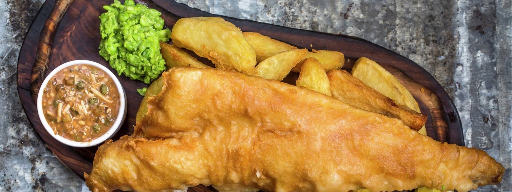

Beef Wellington

Cooking Process
- Wrap each piece of beef tightly in a triple layer of cling film to set its shape, then chill overnight.
- Remove the cling film, then quickly sear the beef fillets in a hot pan with a little olive oil for 30-60 seconds until browned all over and rare in the middle. Remove from the pan and leave to cool.
- Finely chop the mushrooms and fry in a hot pan with a little olive oil, the thyme leaves and some seasoning. When the mushrooms begin to release their juices, continue to cook over a high heat for about 10 minutes until all the excess moisture has evaporated and you are left with a mushroom paste (known as a duxelle). Remove the duxelle from the pan and leave to cool.
- Lay a large sheet of cling film on a work surface and place 4 slices of Parma ham in the middle, overlapping them slightly, to create a square. Spread half the duxelle evenly over the ham.
- Season the beef fillets, then place them on top of the mushroom-covered ham. Using the cling film, roll the Parma ham over the beef, then roll and tie the cling film to get a nice, evenly thick log. Repeat this step with the other beef fillet, then chill for at least 30 minutes.
Fish & Chips

Cooking Process
- In a large bowl, mix both flours, baking powder and sugar.
- Add soda water, lager and salt.
- Cover your fish with a dusting of plain flour, then drop into the batter and coat completely.
- Pre-heat vegetable oil in deep fryer to 180C.
- Once fish is coated with batter, gently place into the deep fryer and cook for 8 to 10 minutes, until golden and crispy.
- Remove from fat and drain.
La Zi Ji Mala Chicken

Cooking Process
- Spread out the chicken in the hot pan and fry it with minimal touching to ensure browning.
- Once the chicken is browned on both sides and cooked through, transfer it onto a plate.
- Stir fry the aromatics.
- Add the chicken back to the pan and toss it.
Mapo Tou Fu

Cooking Process
- Fry the Sichuan peppercorns in the oil to infuse the aroma
- Cook the ground pork with doubanjiang
- Once the pork is cooked, add the green onions and stir a few times
- Add the broth and braise with the cover on
- Drizzle in the cornstarch slurry to thicken the sauce